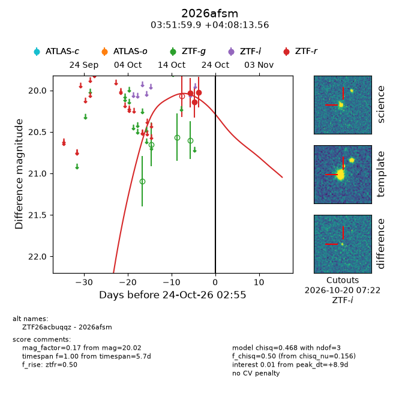
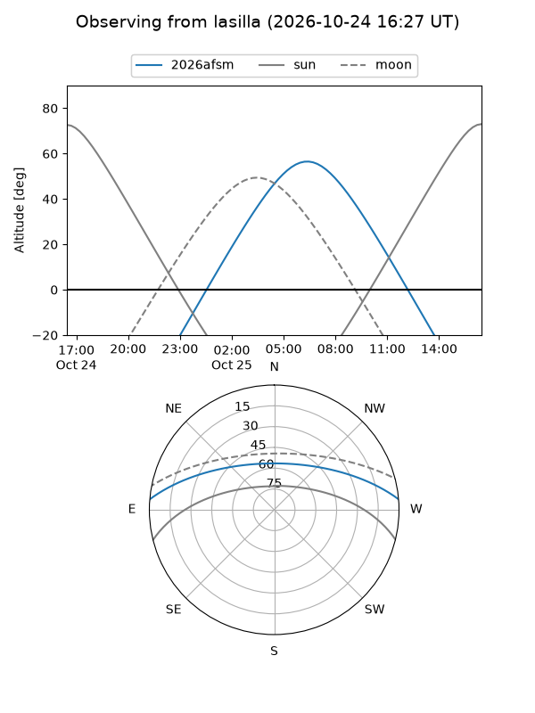
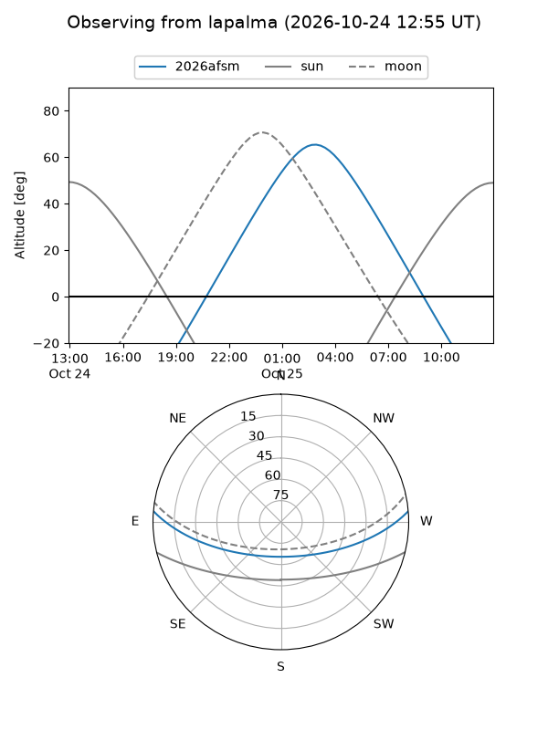
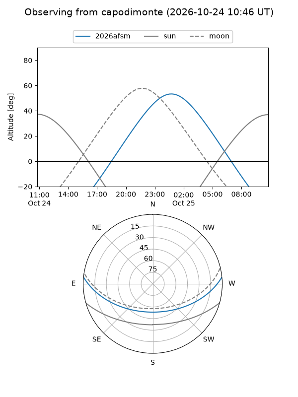
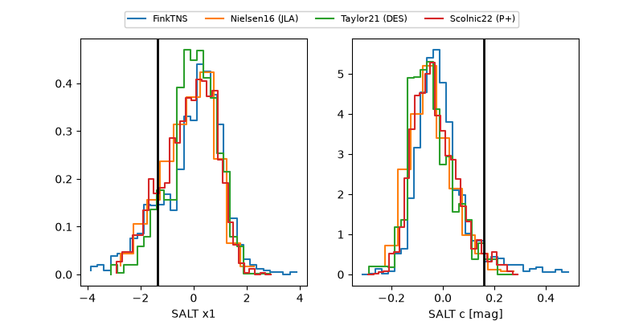

2026afsm
Target 2026afsm at 2026-10-24 14:56
Aliases and brokers:
FINK-ZTF: ztf.fink-portal.org/ZTF26acbuqqz
Lasair-ZTF: lasair-ztf.lsst.ac.uk/objects/ZTF26acbuqqz
ALeRCE-ZTF: alerce.online/object/ZTF26acbuqqz
YSE-PZ: ziggy.ucolick.org/yse/transient_detail/2026afsm
TNS name: wis-tns.org/object/2026afsm
Direct TNS query: direct search
alt names
ZTF26acbuqqz (ztf,fink_ztf)
2026afsm (tns,yse)
Coordinates:
equatorial (ra, dec) = 57.9995,+4.13710
equatorial (HMS+DMS) = 03:51:59.89,+04:08:13.56
galactic (l, b) = (184.3602,-36.38758)
Flags:
peak dt: +9.4
Photometry:
last ztfr=20.02
3 ztfr detections
Lightcurve

Visibility



Additional plots
